คู่มือใช้งานเครื่องมือ · ระดับ Free
ตรวจวัดปั๊มและพัดลม
Pump & Fan Energy Audit
FREE
สำหรับช่างเทคนิคที่เพิ่งเริ่มงาน — อ่านแล้วทำตามได้เอง
ใช้เวลาฝึกประมาณ 60 นาที
เคสตัวอย่าง: โรงงาน A ปั๊มน้ำหล่อเย็น 22 kW 1,450 RPM (ข้อมูลสมมุติ)
อ.หนึ่ง กลับทวี / Aj. Nueng Klubtavee
tripleeenergytools.com
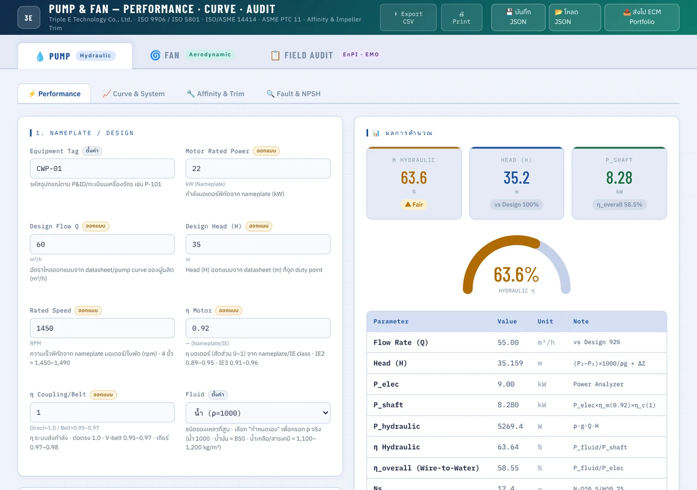
หน้าจอเครื่องมือ — เปิดได้จากเมนู Free ของเว็บไซต์
รุ่นเครื่องมือ: Free commit caea640 · จับภาพ 18 พ.ย. 2569 · คู่มือ Rev00
เครื่องมือนี้ตอบคำถามอะไร
คู่มือใช้งาน · ตรวจวัดพลังงานปั๊มและพัดลม (Pump & Fan Energy Audit) · ระดับ Free
2 / 32
| คำถามหน้างาน | แท็บที่ใช้ | เคสโรงงาน A ได้ |
|---|---|---|
| ปั๊มยังดีอยู่ไหม — ประสิทธิภาพเท่าไร | PUMP → Performance | η ปั๊ม 63.6 % |
| ด้านดูดเสี่ยงเกิด cavitation ไหม | PUMP → Performance (NPSH) | Margin 7.23 m |
| ปั๊มเดินที่จุดไหนของเส้นโค้ง เทียบ BEP | PUMP → Curve & System | 55.0 m³/h · 35.2 m |
| ใส่ VFD / กลึงใบพัด แล้วกำลังลดเท่าไร | PUMP → Affinity & Trim | ลด 48.8 % (กฎกำลังสาม) |
| อาการผิดปกติ มาจากอะไร | PUMP → Fault & NPSH | Efficiency ต่ำกว่า Design 11% |
| EnPI ไว้ติดตามผล · เทียบเกณฑ์ | FIELD AUDIT → EnPI | Wire-to-Water 58.6 % |
| ส่งรายงานตรวจสภาพให้หัวหน้า | FIELD AUDIT → Inspection | คะแนน 82% |
💡 เคล็ดลับ
ใช้ได้ทั้งปั๊มน้ำ (แท็บ PUMP) และพัดลม (แท็บ FAN) — สองแท็บมีหน้าตาเหมือนกัน หน่วยต่างกัน (m ↔ Pa, m³/h ↔ CMH)
แผนที่หน้าจอ
คู่มือใช้งาน · ตรวจวัดพลังงานปั๊มและพัดลม (Pump & Fan Energy Audit) · ระดับ Free
3 / 32
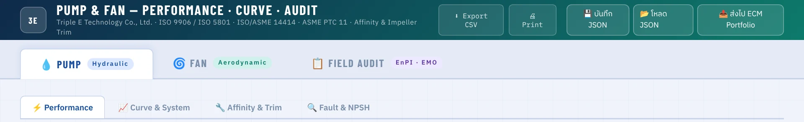
1
2
3
4
5
6
1
PUMP — ปั๊มน้ำ (หน่วย m, m³/h, kPa)
2
FAN — พัดลม (หน่วย Pa, CMH)
3
FIELD AUDIT — Walk-through · EnPI · ตรวจสภาพ/รายงาน
4
แท็บย่อย 4 แท็บ: Performance → Curve & System → Affinity & Trim → Fault
5
Export CSV · Print
6
บันทึก/โหลด JSON · ส่งมาตรการไป ECM Portfolio
ทำตามลำดับแท็บย่อยจากซ้ายไปขวา — ผลแท็บ Performance เติมให้แท็บถัดไปเอง (ช่องมีป้าย ⚡ จาก Performance)
ทุกช่องมีป้ายสีบอกชนิดค่า: ออกแบบ (จากป้าย/แคตตาล็อก) · วัดจริง · ตั้งค่า · คำนวณ
เปิดหน้ามาครั้งแรก มีข้อมูลตัวอย่างของเครื่องมือกรอกไว้แล้ว — แก้ทับด้วยค่าของเราได้เลย
⚠️ ระวัง
หน้านี้ไม่จำข้อมูลเอง — ก่อนปิดหน้ากด 💾 บันทึก JSON เก็บไว้ แล้วใช้ 📂 โหลด JSON เปิดทำต่อ
เปิดบนมือถือ และสลับภาษา
คู่มือใช้งาน · ตรวจวัดพลังงานปั๊มและพัดลม (Pump & Fan Energy Audit) · ระดับ Free
4 / 32
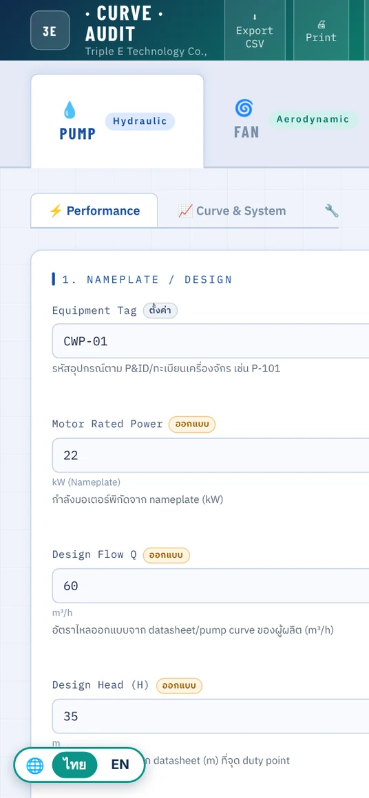
บนมือถือหน้าจอเรียงเป็นคอลัมน์เดียว — ช่องกรอกอยู่บน ผลลัพธ์อยู่ล่าง เลื่อนลงดู
แถบแท็บ PUMP / FAN / FIELD AUDIT อยู่บนสุด แตะเพื่อสลับ
ปุ่ม ไทย | EN ลอยอยู่ด้านล่าง กดสลับภาษาได้ ค่าที่กรอกไว้ไม่หาย
ตารางที่กว้างกว่าจอ ปัดซ้าย-ขวาเพื่อดูคอลัมน์ที่เหลือ
💡 เคล็ดลับ
จดค่าลงแบบฟอร์มกระดาษหน้างานก่อน แล้วค่อยกรอกบนคอมพิวเตอร์ — เร็วกว่าและไม่พลาดจุดทศนิยม
คำศัพท์ที่ต้องรู้ก่อนเริ่ม
คู่มือใช้งาน · ตรวจวัดพลังงานปั๊มและพัดลม (Pump & Fan Energy Audit) · ระดับ Free
5 / 32
| คำ | ความหมายแบบสั้น | จำง่าย ๆ |
|---|---|---|
| Head (H) | แรงดันที่ปั๊มเพิ่มให้น้ำ คิดเป็นความสูงของน้ำ (m) | น้ำ 100 kPa ≈ 10.2 m |
| P_elec · P_shaft | กำลังไฟฟ้าที่วัดได้ · กำลังที่เพลาปั๊มได้รับ | P_shaft = P_elec × η มอเตอร์ × η ส่งกำลัง |
| η Hydraulic | ประสิทธิภาพของตัวปั๊ม (เพลา → น้ำ) | ρgQH ÷ P_shaft |
| Wire-to-Water | ประสิทธิภาพทั้งชุด (ไฟฟ้า → น้ำ) | ρgQH ÷ P_elec · ต่ำกว่าเสมอ |
| BEP | จุดที่ปั๊มมีประสิทธิภาพสูงสุดบนเส้นโค้ง | เดินใกล้ BEP = ประหยัด สึกน้อย |
| System curve | หัวที่ระบบท่อต้องการ = หัวคงที่ + K × Q² | จุดตัดกับเส้นปั๊ม = จุดทำงาน |
| NPSH_a / NPSH_r | แรงดันด้านดูดที่มีจริง / ที่ปั๊มต้องการ | a ต้องมากกว่า r พอสมควร |
| Affinity laws | กฎลดรอบ: Q ∝ N · H ∝ N² · P ∝ N³ | ใช้ประเมิน VFD และกลึงใบพัด |
💡 เคล็ดลับ
SEC (kWh/m³) และ SFP (kW ต่อ m³/s) คือ EnPI ที่ใช้ติดตามผลหลังทำมาตรการ — เครื่องมือคิดให้ในแท็บ FIELD AUDIT
เตรียมเครื่องมือวัดและข้อมูลก่อนเริ่ม
คู่มือใช้งาน · ตรวจวัดพลังงานปั๊มและพัดลม (Pump & Fan Energy Audit) · ระดับ Free
6 / 32
| ค่าที่ต้องมี | เครื่องมือ/แหล่งข้อมูล | ค่าโรงงาน A |
|---|---|---|
| ป้ายมอเตอร์/ปั๊ม: kW · RPM · η มอเตอร์ | Nameplate · แคตตาล็อก | 22 kW · 1,450 · 0.92 |
| จุดออกแบบ Q · H และ η ที่ BEP | Datasheet / pump curve ผู้ผลิต | 60 m³/h · 35 m · 75 % |
| อัตราไหล Q | Ultrasonic flow meter แบบรัดท่อ | 55 m³/h |
| ความดันด้านดูด P₁ · ด้านส่ง P₂ (kPa-G) | เกจที่หน้าแปลนดูด-ส่ง | 20 · 360 kPa-G |
| ระยะสูงระหว่างเกจ ΔZ | ตลับเมตร / เลเซอร์วัดระดับ | 0.5 m |
| กำลังไฟฟ้า P_elec (3 เฟสรวม) | Power analyzer ที่ตู้มอเตอร์ | 9.0 kW |
| รอบจริง · อุณหภูมิน้ำ | Tachometer · เทอร์โมมิเตอร์ | 1,450 RPM · 30 °C |
⚠️ ระวัง
วัด Q · P₁ · P₂ · kW พร้อมกันขณะเดินนิ่ง — อ่านคนละเวลาแล้วค่าไม่สัมพันธ์กัน ผลประสิทธิภาพเพี้ยน
ขั้นที่ 1
PUMP → Performance: ข้อมูลป้ายและการออกแบบ
คู่มือใช้งาน · ตรวจวัดพลังงานปั๊มและพัดลม (Pump & Fan Energy Audit) · ระดับ Free
7 / 32
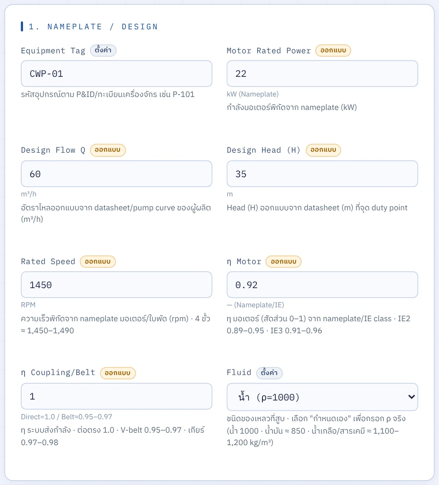
1
2
3
4
5
6
7
8
1
Tag เครื่อง — ใช้ชื่อเดียวกับป้ายหน้างาน (CWP-01)
2
กำลังมอเตอร์พิกัด 22 kW (ใช้เลือก Class การสั่น)
3
Q ออกแบบ 60 m³/h
4
Head ออกแบบ 35 m
5
รอบพิกัด 1,450 RPM
6
η มอเตอร์ 0.92 จากป้าย/IE class
7
η ส่งกำลัง ต่อตรง 1.0 · สายพาน ≈ 0.95–0.97
8
ชนิดของเหลว: น้ำ ρ = 1000
กรอก η เป็นสัดส่วน (0.92) ไม่ใช่เปอร์เซ็นต์ (92)
Q และ Head ออกแบบใช้เทียบเท่านั้น — ผลแสดงเป็น "vs Design %"
💡 เคล็ดลับ
ของเหลวอื่น (น้ำมัน สารเคมี) เลือก "กำหนดเอง" แล้วกรอก ρ จริง — ρ มีผลกับ Head ที่แปลงจากความดัน
ขั้นที่ 2
PUMP → Performance: ค่าที่วัดหน้างาน
คู่มือใช้งาน · ตรวจวัดพลังงานปั๊มและพัดลม (Pump & Fan Energy Audit) · ระดับ Free
8 / 32
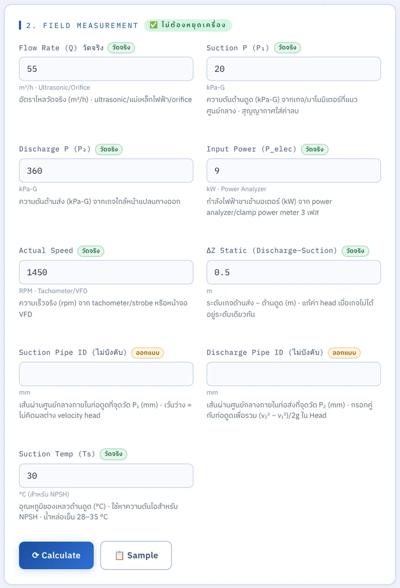
1
2
3
4
5
6
7
8
9
1
Q วัดจริง 55 m³/h
2
P₁ ด้านดูด 20 kPa-G (สุญญากาศใส่ค่าลบ)
3
P₂ ด้านส่ง 360 kPa-G
4
P_elec 9.0 kW (รวม 3 เฟส)
5
รอบจริง 1,450 RPM
6
ΔZ = ระดับเกจส่ง − เกจดูด 0.5 m
7
ขนาดท่อ ID (ไม่บังคับ) — ใส่ครบทั้งสองช่องจึงคิด velocity head
8
อุณหภูมิน้ำด้านดูด 30 °C
9
กด ⟳ Calculate
ความดันกรอกเป็น kPa-G (เกจ) — เกจอ่าน bar ให้คูณ 100 ก่อนกรอก (3.6 bar = 360 kPa)
กด Calculate แล้วค่าจะถูกส่งต่อไปแท็บ Affinity · Fault · EnPI ให้เอง
⚠️ ระวัง
ไม่กรอก Q หรือ P_elec เครื่องมือจะเตือน "กรอก Q และ P_elec อย่างน้อย" และไม่คำนวณ
ขั้นที่ 3
อ่านผล Performance
คู่มือใช้งาน · ตรวจวัดพลังงานปั๊มและพัดลม (Pump & Fan Energy Audit) · ระดับ Free
9 / 32
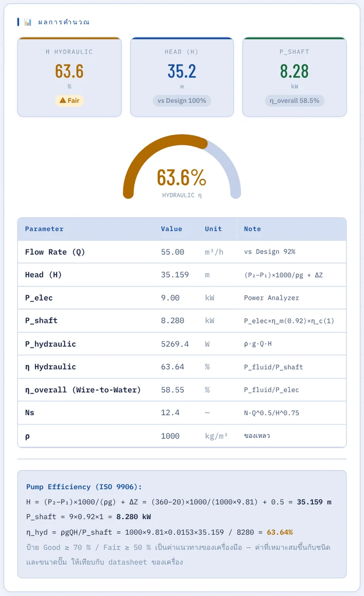
1
2
3
4
5
1
η Hydraulic = 63.6 % — ป้าย ⚠ Fair
2
Head = 35.2 m (vs Design 100%)
3
P_shaft = 8.28 kW · η_overall 58.5 %
4
ตารางรายละเอียด: P_hydraulic 5269.4 W · Ns 12.4
5
ที่มาของตัวเลขแต่ละบรรทัด (trace)
Head = (360 − 20) × 1000 ÷ (1000 × 9.81) + 0.5 = 35.159 m
η = ρgQH ÷ P_shaft = 5269.4 W ÷ 8.280 kW → 63.64 % (แคตตาล็อกบอก 75 % — ต่ำกว่าเกือบ 11 จุด)
Ns 12.4 → Radial (Centrifugal) — High Head, Low Flow — ใช้ดูว่าชนิดปั๊มเหมาะกับงานหรือไม่
💡 เคล็ดลับ
ป้าย Good ≥ 70 % / Fair ≥ 50 % เป็นค่าแนวทางของเครื่องมือ — ตัดสินจริงให้เทียบกับ η ที่จุดเดียวกันบน pump curve ของผู้ผลิต
ลองเปลี่ยนค่า (What-if): กรอกผิดแล้วผลเป็นอย่างไร
คู่มือใช้งาน · ตรวจวัดพลังงานปั๊มและพัดลม (Pump & Fan Energy Audit) · ระดับ Free
10 / 32
| กรณี | Head (m) | η ปั๊ม (%) | ป้ายผล |
|---|---|---|---|
| เคสหลัก (P₁ 20 · P₂ 360 kPa · 9.0 kW) | 35.2 | 63.6 | ⚠ Fair |
| กรอกความดันเป็น bar (0.2 · 3.6) ลงช่อง kPa | 0.8 | 1.5 | ✕ Poor |
| ลืม ΔZ (ใส่ 0 แทน 0.5 m) | 34.7 | 62.7 | ⚠ Fair |
| กรอก kW เฟสเดียว (3.0 แทน 9.0) | 35.2 | 190.9 | ✕ เป็นไปไม่ได้ |
| η มอเตอร์ 0.88 แทน 0.92 | 35.2 | 66.5 | ⚠ Fair |
ทำเอง: แก้ทีละช่อง → กด Calculate → ดูผล → แก้กลับเป็นค่าเดิม
η เกิน 100 % เครื่องมือขึ้นกรอบแดง "เป็นไปไม่ได้ทางกายภาพ" — แต่กรอก bar ผิดช่องไม่มีคำเตือน ได้แค่ Head ต่ำผิดปกติ
η มอเตอร์ต่ำลง → P_shaft ลด → η ปั๊มดูสูงขึ้น (66.5 %) ใช้ค่าป้ายจริงเสมอ
⚠️ ระวัง
ผล Head ต่างจาก Head ออกแบบมาก ๆ ให้สงสัยหน่วยความดันก่อน แล้วค่อยสงสัยปั๊ม
ขั้นที่ 4
ตรวจ NPSH: เสี่ยง Cavitation ไหม
คู่มือใช้งาน · ตรวจวัดพลังงานปั๊มและพัดลม (Pump & Fan Energy Audit) · ระดับ Free
11 / 32
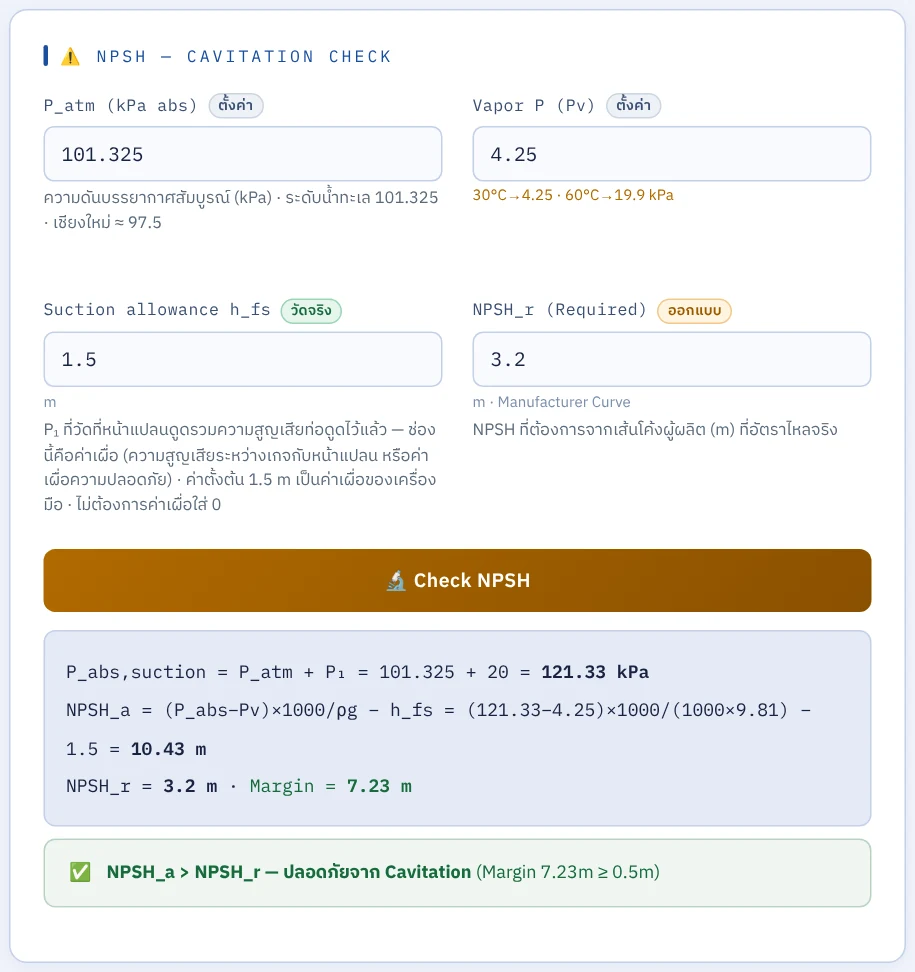
1
2
3
4
5
1
ความดันบรรยากาศ 101.325 kPa (ระดับน้ำทะเล)
2
ความดันไอ Pv ตามอุณหภูมิน้ำ: 30 °C → 4.25 kPa
3
Suction allowance h_fs = ค่าเผื่อ (ค่าเริ่มต้น 1.5 m)
4
NPSH_r จากเส้นโค้งผู้ผลิต 3.2 m
5
NPSH_a = 10.43 m · Margin 7.23 m → ปลอดภัย
กรอบ NPSH แสดงหลังกด Calculate · กด 🔬 Check NPSH ทุกครั้งที่แก้ค่า
เกจ P₁ ที่หน้าแปลนดูดรวมความสูญเสียในท่อดูดไว้แล้ว — h_fs จึงเป็นค่าเผื่อความปลอดภัย ใส่ 0 ได้ Margin 8.73 m
น้ำร้อน 60 °C (Pv 19.9 kPa): NPSH_a ลดเหลือ 8.84 m — ของเหลวร้อนต้องตรวจทุกครั้ง
⚠️ ระวัง
Margin ต่ำกว่า 0.5 m เครื่องมือเตือน "เสี่ยง CAVITATION" — ฟังเสียงกรวดที่เรือนปั๊ม ล้าง strainer ก่อนสรุป
ขั้นที่ 5
Curve & System: กรอกจุดวัดเส้นโค้ง
คู่มือใช้งาน · ตรวจวัดพลังงานปั๊มและพัดลม (Pump & Fan Energy Audit) · ระดับ Free
12 / 32
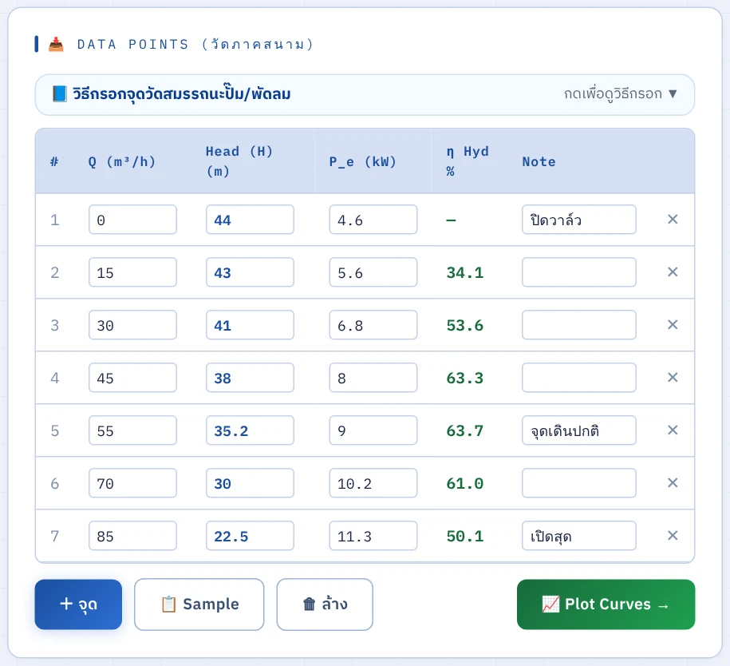
1
2
3
4
5
1
จุดที่ 1 ปิดวาล์วด้านส่ง (Q = 0) — Shutoff
2
จุดเดินปกติ 55 m³/h · 35.2 m · 9.0 kW
3
จุดสุดท้าย เปิดวาล์วสุด — Runout
4
＋ จุด — เพิ่มแถว
5
กด 📈 Plot Curves →
กรอก Q · Head (m) · P_e (kW) ต่อจุด — คอลัมน์ η Hyd % คิดให้เอง (ใช้ η มอเตอร์จากขั้นที่ 1)
เคสโรงงาน A เก็บ 7 จุด: η สูงสุด 63.7 % ที่จุดเดินปกติ · ใกล้ Shutoff (34.1 %) และ Runout (50.1 %) ต่ำ
Head ในตารางนี้กรอกเป็น m ที่คิดแล้ว (ใช้สูตรเดียวกับขั้นที่ 3)
⚠️ ระวัง
ปิดวาล์วด้านส่งไม่เกิน 1–2 นาทีต่อครั้ง (น้ำในปั๊มร้อนขึ้นเร็ว) — ห้ามปิดวาล์วด้านดูด
ขั้นที่ 6
System Curve Parameters: หา K ของระบบ
คู่มือใช้งาน · ตรวจวัดพลังงานปั๊มและพัดลม (Pump & Fan Energy Audit) · ระดับ Free
13 / 32
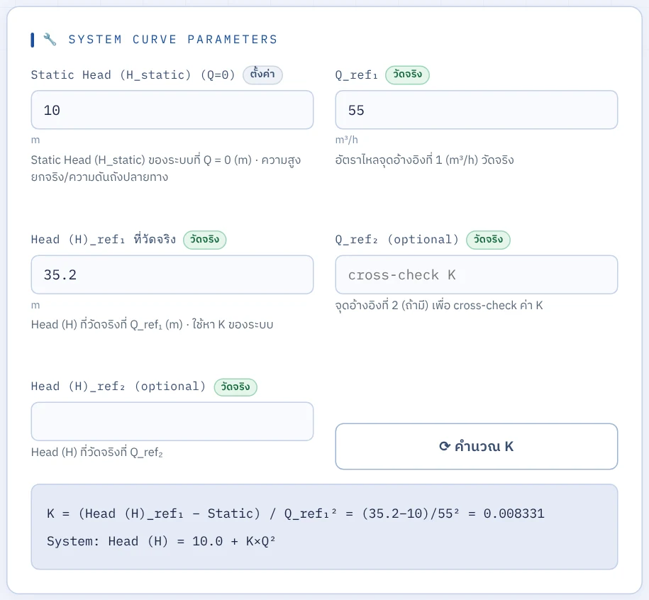
1
2
3
4
5
1
Static head ที่ Q = 0: ระดับยกจริง/ความดันถังปลายทาง 10 m
2
Q_ref₁ = 55 m³/h (ขณะเดินปกติ)
3
Head_ref₁ = 35.2 m (วัดพร้อมกัน)
4
จุดอ้างอิงที่ 2 (ไม่บังคับ) — ใช้ตรวจ K
5
K = 0.008331 · ระบบ: H = 10 + K × Q²
K = (35.2 − 10) ÷ 55² — เครื่องมือคิดใหม่ทุกครั้งที่กด Plot Curves หรือ ⟳ คำนวณ K
กรอกจุดที่ 2: K สองค่าต่างกันไม่ถึง 10 % เครื่องมือใช้ค่าเฉลี่ย · เกิน 10 % ขึ้นคำเตือน
⚠️ ระวัง
Static head วัดตอนปั๊มหยุด ไม่ใช่ค่าตอนปิดวาล์วขณะปั๊มเดิน — ค่านั้นคือ Shutoff ของปั๊ม (44 m)
อ่านกราฟ: Shutoff · BEP · จุดทำงาน
คู่มือใช้งาน · ตรวจวัดพลังงานปั๊มและพัดลม (Pump & Fan Energy Audit) · ระดับ Free
14 / 32
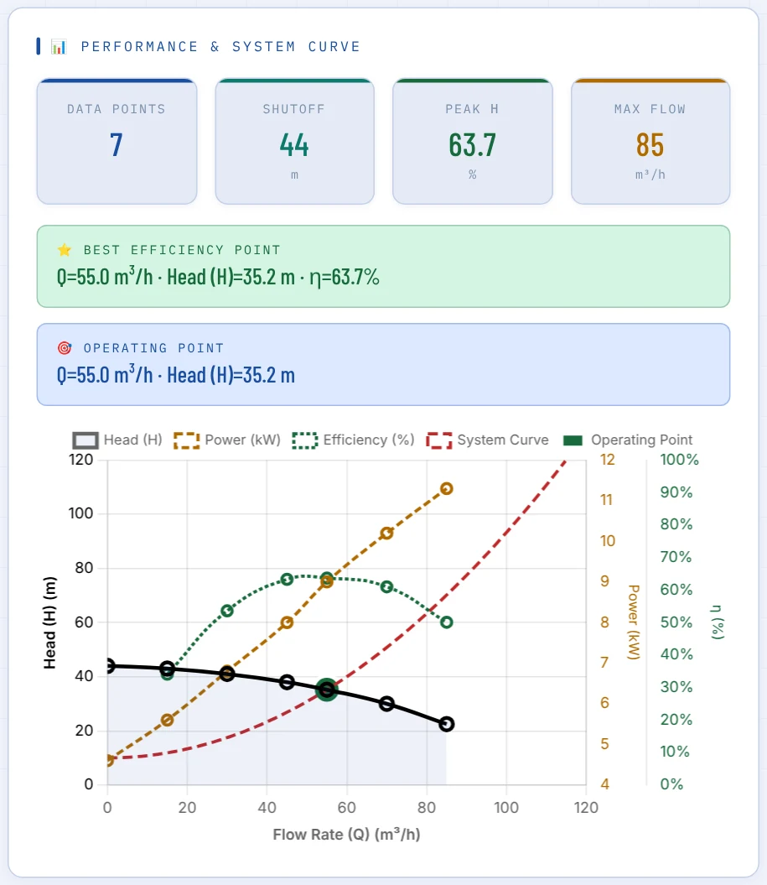
1
2
3
4
5
1
Shutoff = 44 m
2
Peak η = 63.7 %
3
BEP: Q 55.0 m³/h · H 35.2 m · η 63.7 %
4
จุดทำงาน: Q 55.0 m³/h · H 35.2 m
5
เส้นทึบ Head · ประส้ม kW · ประเขียว η · ประแดง System
จุดทำงานใกล้จุดอ้างอิงที่วัด (55 m³/h) = ข้อมูลสอดคล้องกัน
BEP ของปั๊มนี้อยู่ที่จุดเดินปกติ แต่ η สูงสุดแค่ 63.7 % ต่ำกว่าแคตตาล็อก 75 % → ปั๊มสึก (wear ring/ใบพัด)
จุดทำงาน = จุดตัดของเส้นปั๊มกับเส้นระบบ (ประมาณเชิงเส้นระหว่างจุดวัด)
💡 เคล็ดลับ
BEP ในเครื่องมือ = จุดวัดที่ η สูงสุดในตาราง ไม่ได้ลากเส้นโค้งหาค่าระหว่างจุด — เก็บจุดถี่ขึ้นรอบ ๆ จุดเดินปกติ
ขั้นที่ 7
Affinity & Trim: ตั้งโจทย์ลดรอบ
คู่มือใช้งาน · ตรวจวัดพลังงานปั๊มและพัดลม (Pump & Fan Energy Audit) · ระดับ Free
15 / 32
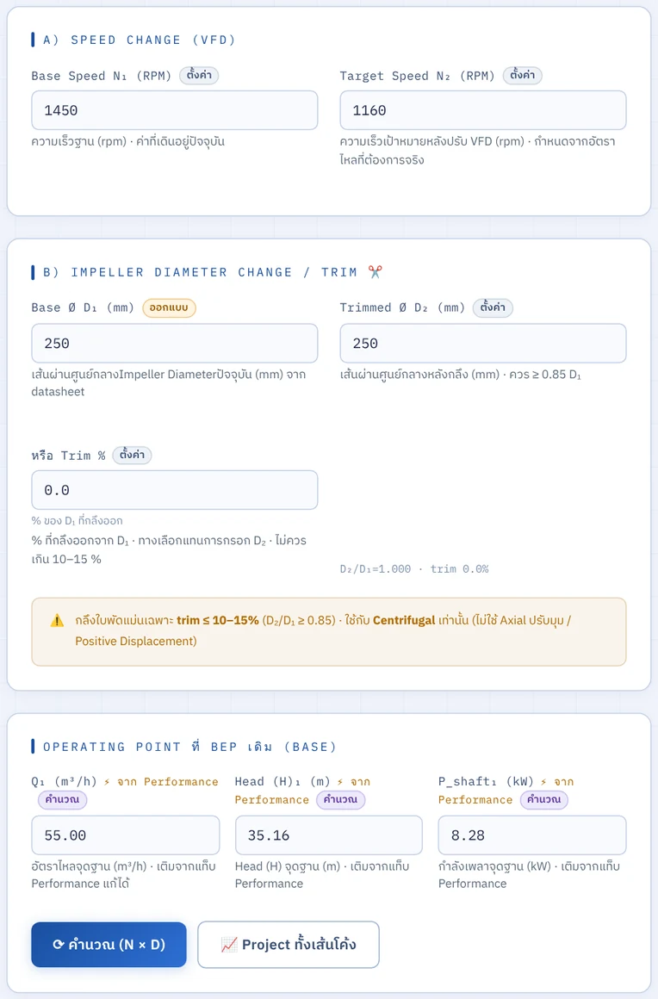
1
2
3
4
5
6
7
8
9
1
N₁ = 1450 RPM (ส่งมาจากรอบที่วัด)
2
N₂ รอบเป้าหมายหลังติด VFD = 1,160 (80 %)
3
Ø ใบพัดเดิม D₁ = 250 mm
4
D₂ = D₁ = 250 เมื่อประเมิน VFD อย่างเดียว
5
หรือกรอก % ที่กลึงออก
6
Q₁ = 55.00 m³/h
7
H₁ = 35.16 m
8
P_shaft₁ = 8.28 kW
9
กด ⟳ คำนวณ (N × D)
ช่อง 6–8 เติมจากแท็บ Performance ให้เอง (จุดเดินปกติที่วัดได้)
ตัวคูณรวม f = (N₂/N₁) × (D₂/D₁) — กรอก D₂ ไว้ต่างจาก D₁ ผลจะรวมการกลึงใบพัดด้วย
⚠️ ระวัง
ค่าตัวอย่างของเครื่องมือตั้ง D₂ = 240 mm ไว้ — ถ้าจะดู VFD อย่างเดียวต้องแก้ D₂ ให้เท่า D₁ (Trim 0 %)
อ่านผล Affinity
คู่มือใช้งาน · ตรวจวัดพลังงานปั๊มและพัดลม (Pump & Fan Energy Audit) · ระดับ Free
16 / 32
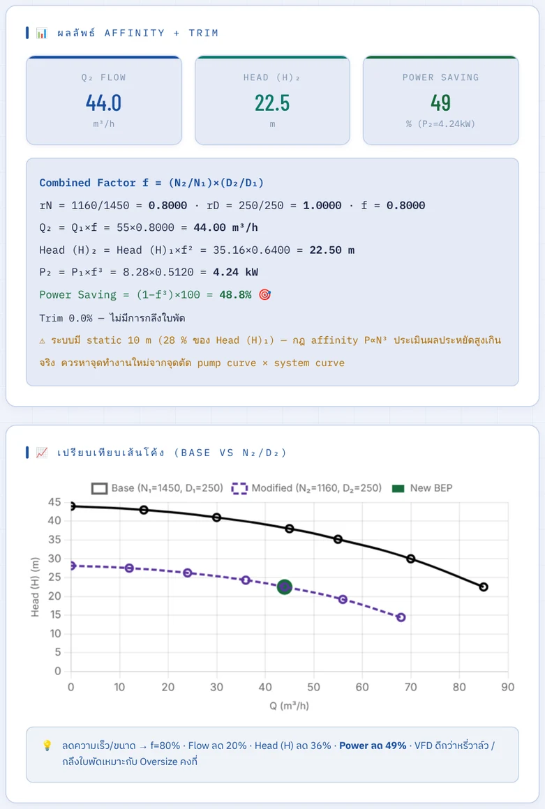
1
2
3
4
5
1
Q₂ = 44.0 m³/h
2
H₂ = 22.5 m
3
Power Saving 49 % (P₂ = 4.24 kW)
4
บรรทัดเตือน static head 28 % ของ H₁
5
เส้นทึบ = รอบเดิม · เส้นประ = รอบใหม่
P₂ = P₁ × f³ = 8.28 × 0.8³ = 4.24 kW → ลด 48.8 %
ระบบนี้มี static head 10 m — กฎกำลังสามประเมินผลประหยัดสูงเกินจริง เพราะต้องเดินรอบสูงกว่า N₂ จึงจะส่งน้ำได้ตามเส้นระบบ
ใช้ผลนี้เป็นค่าสูงสุดที่เป็นไปได้ แล้ววัดจริงหลังติดตั้งยืนยัน
⚠️ ระวัง
H₂ ต่ำกว่า static head เครื่องมือขึ้นสีแดง "ที่รอบนี้ส่งของไหลไม่ได้" — ผลประหยัดใช้ไม่ได้ และจะไม่ถูกส่งออกไป ECM
ลองเปลี่ยนค่า (What-if): ลดรอบ / กลึงใบพัด
คู่มือใช้งาน · ตรวจวัดพลังงานปั๊มและพัดลม (Pump & Fan Energy Audit) · ระดับ Free
17 / 32
| กรณี | f | Q₂ (m³/h) | H₂ (m) | กำลังลด (%) |
|---|---|---|---|---|
| N₂ 1,305 (ลด 10 %) | 0.9000 | 49.5 | 28.5 | 27.1 |
| N₂ 1,160 (ลด 20 %) ตามเคส | 0.8000 | 44.0 | 22.5 | 48.8 |
| N₂ 1,015 (ลด 30 %) | 0.7000 | 38.5 | 17.2 | 65.7 |
| N₂ 725 (ลด 50 %) — H₂ ต่ำกว่า static 10 m | 0.5000 | 27.5 | 8.8 | 87.5 (ใช้ไม่ได้) |
| รอบเดิม · กลึงใบพัด 250 → 237.5 mm (5 %) | 0.9500 | 52.3 | 31.7 | 14.3 |
| ลด 20 % + กลึง 5 % | 0.7600 | 41.8 | 20.3 | 56.1 |
ทำเอง: แก้ N₂ หรือ D₂ → กด ⟳ คำนวณ (N × D) → แก้กลับ
กลึงใบพัดเหมาะกับปั๊มใหญ่เกินงานแบบถาวร · โหลดแกว่งตามเวลาใช้ VFD
กลึงเกิน 15 % เครื่องมือเตือนสีแดง — กฎ affinity ของการกลึงแม่นเฉพาะกลึงไม่มาก
💡 เคล็ดลับ
ลดรอบมากขึ้น กำลังลดเร็วกว่า flow มาก — แต่ต้องดูว่าระบบยังได้ flow พอทุกช่วงเวลาหรือไม่
ข้อมูลส่ง ECM Portfolio
คู่มือใช้งาน · ตรวจวัดพลังงานปั๊มและพัดลม (Pump & Fan Energy Audit) · ระดับ Free
18 / 32
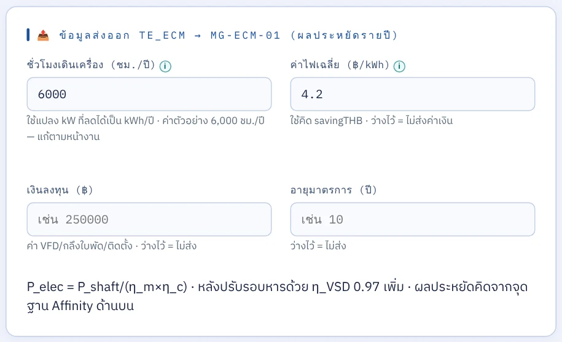
1
2
3
4
1
ชั่วโมงเดินเครื่อง/ปี — ใช้แปลง kW เป็น kWh/ปี
2
ค่าไฟเฉลี่ย ฿/kWh
3
เงินลงทุน (ค่า VFD + ติดตั้ง)
4
อายุมาตรการ (ปี)
กดปุ่ม 📤 ส่งไป ECM Portfolio บนแถบหัว → ได้ไฟล์มาตรการไปรวมในเครื่องมือ ECM Portfolio
P_elec คิดจาก P_shaft ÷ (η มอเตอร์ × η ส่งกำลัง) และหารด้วย η VSD 0.97 หลังติด VFD
ชนิดที่ยังเป็นข้อมูลตัวอย่าง หรือ H₂ ต่ำกว่า static head จะไม่ถูกส่งออก และเครื่องมือแจ้งเหตุผล
⚠️ ระวัง
ไฟล์ส่งออกใช้กฎกำลังสาม (ไม่หัก static head) — ระบุในรายงานว่าเป็นค่าประมาณ ต้องวัดยืนยันหลังติดตั้ง
ขั้นที่ 8
Fault & NPSH: วิเคราะห์อาการ
คู่มือใช้งาน · ตรวจวัดพลังงานปั๊มและพัดลม (Pump & Fan Energy Audit) · ระดับ Free
19 / 32
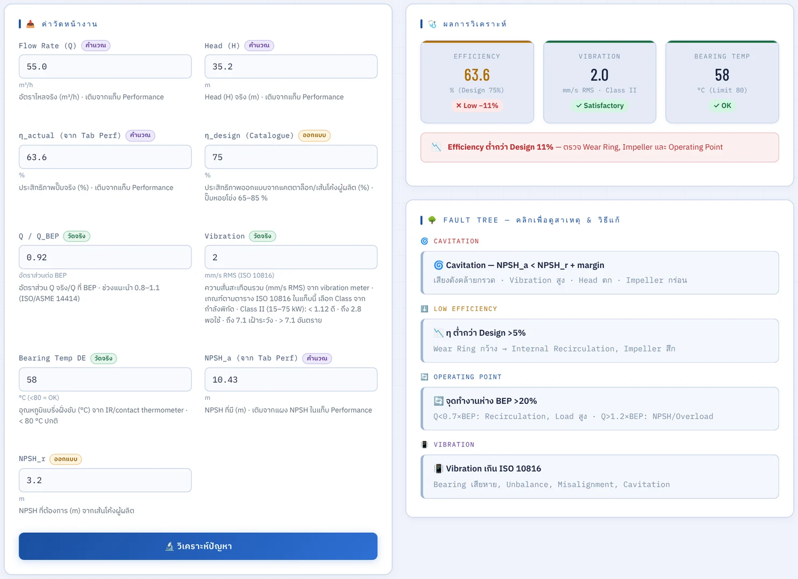
1
2
3
4
5
6
7
8
1
η จริง 63.6 % (จาก Performance)
2
η ออกแบบ จากแคตตาล็อก 75 %
3
Q / Q_BEP = 55 ÷ 60 = 0.92
4
การสั่น 2.0 mm/s RMS
5
อุณหภูมิแบริ่งฝั่งขับ 58 °C
6
NPSH_a 10.43 m (จากขั้นที่ 4)
7
KPI: η ✕ Low −11% · สั่น Class II ✓ Satisfactory · แบริ่ง ✓ OK
8
Efficiency ต่ำกว่า Design 11% — ตรวจ wear ring/ใบพัด
กด 🔬 วิเคราะห์ปัญหา หลังกรอกครบ · Class การสั่นเลือกจากกำลังมอเตอร์ในขั้นที่ 1 (15–75 kW = Class II)
Q/Q_BEP ต่ำกว่า 0.7 หรือสูงกว่า 1.2 เครื่องมือเตือนให้ลดรอบ/เลิกหรี่วาล์ว
💡 เคล็ดลับ
ตารางเกณฑ์การสั่นตาม Class อยู่ใต้ช่องกรอก — อ่านคู่กับป้าย KPI
Fault Tree: คลิกดูสาเหตุและวิธีแก้
คู่มือใช้งาน · ตรวจวัดพลังงานปั๊มและพัดลม (Pump & Fan Energy Audit) · ระดับ Free
20 / 32
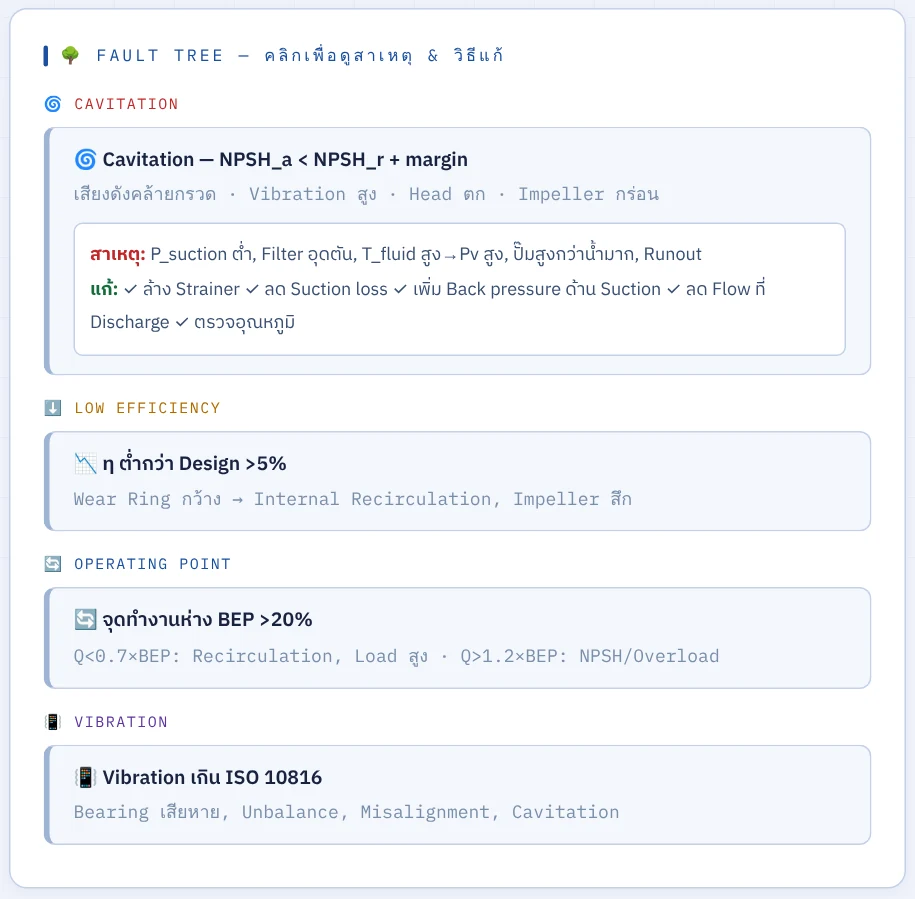
คลิกหัวข้อในกล่องเพื่อเปิด/ปิดรายละเอียด — แบ่งตามอาการ: Cavitation · η ต่ำ · จุดทำงานห่าง BEP · การสั่น
ใช้เป็นรายการตรวจหน้างาน: เปิดหัวข้อที่ตรงกับผลในขั้นที่ 8 แล้วไล่ตรวจตามลำดับ
โรงงาน A: η ต่ำกว่าออกแบบ → ดูหัวข้อ "η ต่ำกว่า Design"
⚠️ ระวัง
Fault tree เป็นแนวทางเบื้องต้น — ก่อนเปิดเครื่องซ่อม ยืนยันด้วยการวัดซ้ำและข้อมูลของผู้ผลิต
ขั้นที่ 9
FIELD AUDIT → Walk-through & EMO
คู่มือใช้งาน · ตรวจวัดพลังงานปั๊มและพัดลม (Pump & Fan Energy Audit) · ระดับ Free
21 / 32
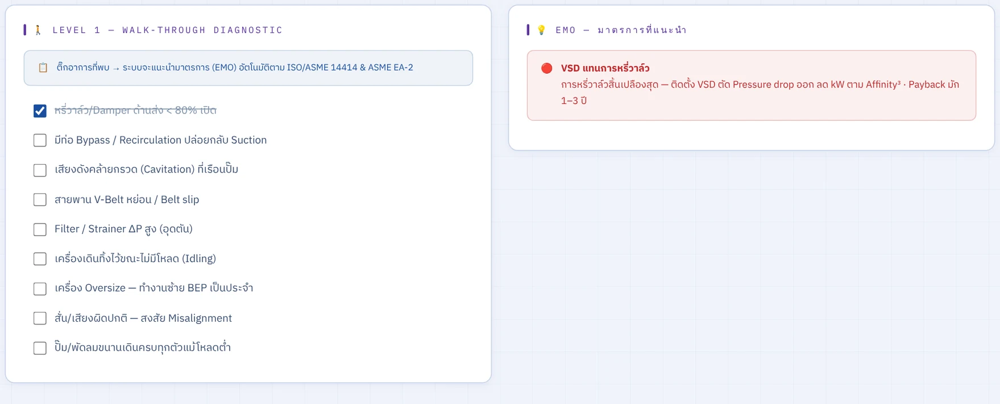
1
2
1
ติ๊กอาการที่เห็นหน้างาน — โรงงาน A: หรี่วาล์วด้านส่ง
2
มาตรการแนะนำขึ้นทันที: VSD แทนการหรี่วาล์ว
ใช้ตอนเดินสำรวจก่อนวัด (Level 1) — ไม่ต้องกรอกตัวเลข
สีแดง = ผลประหยัดสูง ทำก่อน · สีเหลือง/ส้ม = งานบำรุงรักษา
จดอาการที่ติ๊กลงในหมายเหตุของรายงาน (ขั้นที่ 11)
💡 เคล็ดลับ
อาการเดียวมีหลายสาเหตุได้ — ใช้รายการนี้หาจุดที่ควรวัดละเอียด ไม่ใช่ข้อสรุป
EnPI & Benchmark
คู่มือใช้งาน · ตรวจวัดพลังงานปั๊มและพัดลม (Pump & Fan Energy Audit) · ระดับ Free
22 / 32
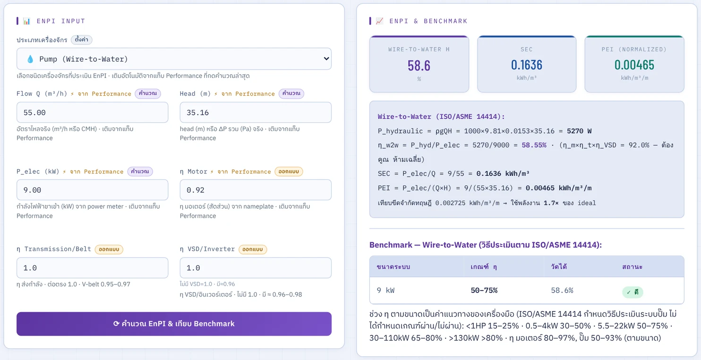
1
2
3
4
5
6
7
1
ชนิดเครื่อง: Pump (Wire-to-Water)
2
Q (เติมจาก Performance)
3
Head (เติมจาก Performance)
4
P_elec (เติมจาก Performance)
5
η VSD: ไม่มี 1.0 · มี ≈ 0.96–0.98
6
Wire-to-Water 58.6 % · SEC 0.1636 kWh/m³ · PEI 0.00465
7
เทียบเกณฑ์ตามขนาด 50–75% → ✓ ดี
กด ⟳ คำนวณ EnPI & เทียบ Benchmark · PEI = 1.7 เท่าของขีดจำกัดทางทฤษฎี
SEC (kWh ต่อ m³ ที่สูบ) ใช้ติดตามผลรายเดือน — ก่อน/หลังทำมาตรการต้องวัดที่ Head ใกล้กัน
💡 เคล็ดลับ
Wire-to-Water ผ่านเกณฑ์ตามขนาด แต่ η ปั๊มต่ำกว่าแคตตาล็อก — ดูทั้งสองค่า อย่าดูค่าเดียว
เทียบเกณฑ์ปั๊มน้ำใหม่ EU 547/2012 (MEI)
คู่มือใช้งาน · ตรวจวัดพลังงานปั๊มและพัดลม (Pump & Fan Energy Audit) · ระดับ Free
23 / 32
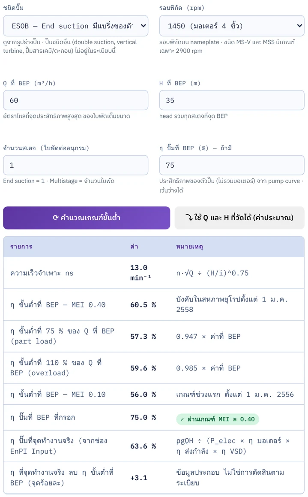
1
2
3
4
5
6
1
ชนิดปั๊ม: ESOB (End suction มีแบริ่งของตัวเอง)
2
รอบพิกัด 1450 (4 ขั้ว)
3
Q ที่ BEP 60 m³/h (จาก datasheet)
4
H ที่ BEP 35 m
5
η ปั๊มที่ BEP จากแคตตาล็อก 75 %
6
η ขั้นต่ำ MEI 0.40 = 60.5 % · ผล: ✓ ผ่านเกณฑ์ MEI ≥ 0.40
ส่วนเสริม ไม่บังคับ — ใช้กับปั๊มหอยโข่งน้ำสะอาดที่มีข้อมูล BEP · ns = 13.0 min⁻¹
η ที่จุดทำงานจริง 63.6 % ต่างจากเกณฑ์ขั้นต่ำ +3.1 จุด — ข้อมูลประกอบ ไม่ใช่การตัดสินตามระเบียบ
เกณฑ์ part load (75 % Q) 57.3 % · overload (110 % Q) 59.6 %
⚠️ ระวัง
เป็นระเบียบของสหภาพยุโรปสำหรับปั๊มใหม่ ใบพัดเต็มขนาด ไม่ใช่กฎหมายไทย — ใช้เป็นเกณฑ์อ้างอิงตอนเลือกปั๊มทดแทน
ขั้นที่ 10
Inspection: ตรวจสภาพด้วยตา
คู่มือใช้งาน · ตรวจวัดพลังงานปั๊มและพัดลม (Pump & Fan Energy Audit) · ระดับ Free
24 / 32
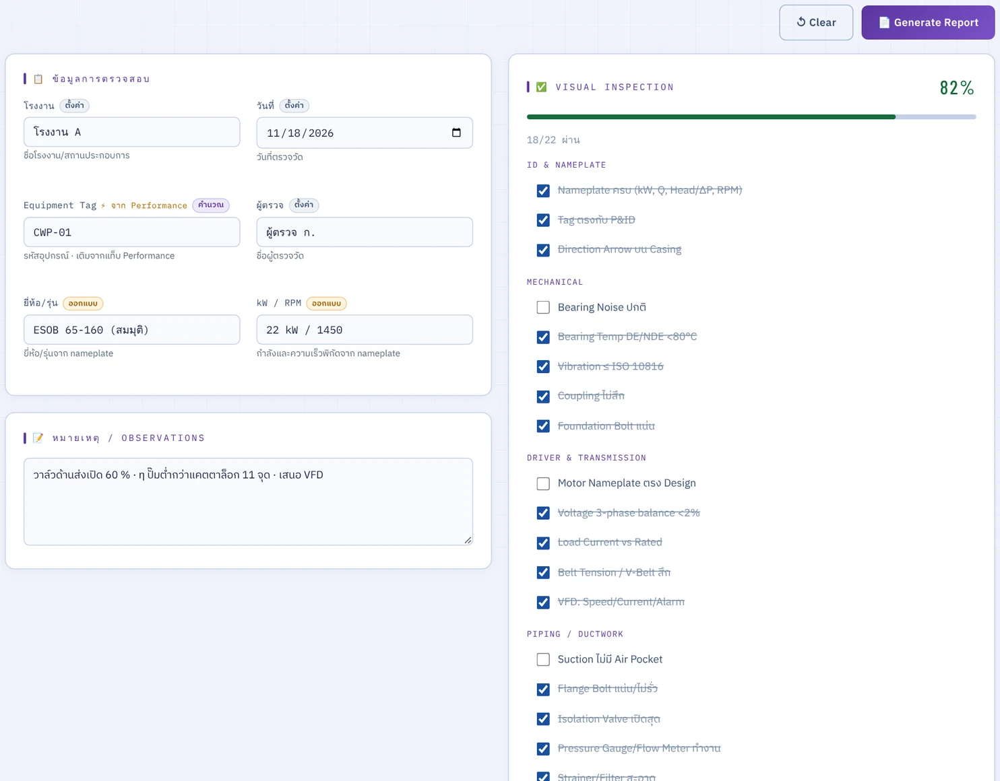
1
2
3
4
5
1
ชื่อโรงงาน · วันที่ · ผู้ตรวจ
2
Tag (เติมจาก Performance)
3
ยี่ห้อ/รุ่นและพิกัดตามป้ายเครื่อง
4
ติ๊กรายการที่ผ่าน — 5 หมวด 22 ข้อ
5
กด 📄 Generate Report
โรงงาน A ผ่าน 18/22 ผ่าน = 82% · ข้อที่ไม่ติ๊ก = ต้องแก้
หมายเหตุ: จดอาการจาก Walk-through และผลที่สำคัญ (η ต่ำ เสนอ VFD)
⚠️ ระวัง
รายการตรวจด้านความปลอดภัย (guard · LOTO · E-stop) ไม่ผ่านแม้ข้อเดียว ต้องแจ้งหัวหน้าก่อนทำงานต่อ
ขั้นที่ 11
รายงานตรวจสภาพ (Field Audit Report)
คู่มือใช้งาน · ตรวจวัดพลังงานปั๊มและพัดลม (Pump & Fan Energy Audit) · ระดับ Free
25 / 32
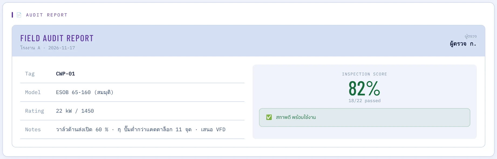
รายงานรวมข้อมูลเครื่อง หมายเหตุ และคะแนนตรวจสภาพ 82% (≥ 80 % = สภาพดี · 60–79 % = แก้บางส่วน · < 60 % = เร่งด่วน)
พิมพ์หรือบันทึกเป็น PDF ด้วยปุ่ม 🖨 Print บนแถบหัว
⬇ Export CSV = ตารางจุดวัดเส้นโค้งปั๊ม/พัดลม + ผล EnPI ล่าสุด เปิดด้วย Excel ได้
💡 เคล็ดลับ
เกณฑ์แบ่งคะแนน 80 / 60 % เป็นค่าแนวทางของเครื่องมือ — ใช้คัดลำดับงานซ่อม ไม่ใช่มาตรฐาน
แท็บ FAN: ตัวอย่างโรงงาน B (ค่าที่วัด)
คู่มือใช้งาน · ตรวจวัดพลังงานปั๊มและพัดลม (Pump & Fan Energy Audit) · ระดับ Free
26 / 32
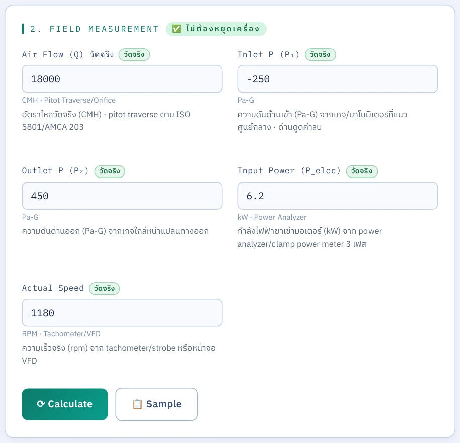
1
2
3
4
1
Q อากาศ 18,000 CMH (pitot traverse)
2
P₁ ด้านเข้า −250 Pa (ด้านดูดเป็นค่าลบ)
3
P₂ ด้านออก 450 Pa
4
P_elec 6.2 kW
โรงงาน B: พัดลมดูดอากาศ EF-03 มอเตอร์ 7.5 kW ขับด้วยสายพาน (ข้อมูลสมมุติ)
หน่วยพัดลม: Q เป็น CMH (m³/h) · ความดันเป็น Pa · ไม่มีช่อง ΔZ
ขั้นตอนอื่นเหมือนปั๊มทุกขั้น — Curve · Affinity · Fault ใช้ได้เหมือนกัน
⚠️ ระวัง
ใส่ความดันชนิดเดียวกันทั้งสองด้าน — static กับ static หรือ total กับ total แล้วเทียบกับเส้นโค้งผู้ผลิตชนิดเดียวกัน
ผลพัดลมโรงงาน B
คู่มือใช้งาน · ตรวจวัดพลังงานปั๊มและพัดลม (Pump & Fan Energy Audit) · ระดับ Free
27 / 32
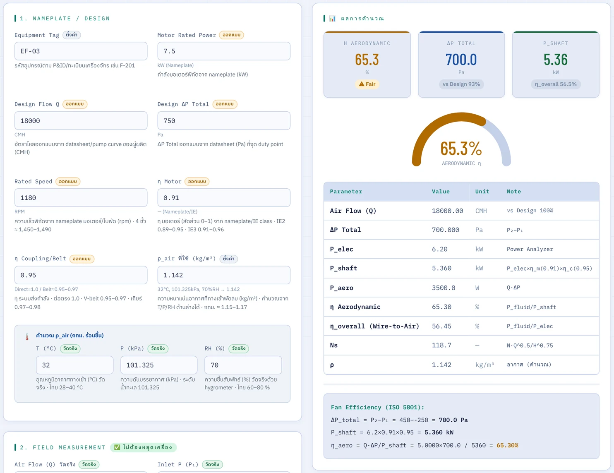
1
2
3
4
5
1
ρ อากาศ ณ จุดวัด = 1.142 kg/m³ (คำนวณจาก T · P · RH)
2
อุณหภูมิอากาศ 32 °C
3
ความชื้นสัมพัทธ์ 70 %
4
η สายพาน 0.95
5
η Aerodynamic 65.3 % — ⚠ Fair
ΔP = 450 − (−250) = 700.0 Pa · P_shaft = 6.2 × 0.91 × 0.95 = 5.36 kW
P_aero = Q × ΔP = 3500.0 W → η = 65.3 % · η_overall 56.5 %
ρ ไม่มีผลกับ η พัดลม (Q·ΔP ไม่ใช้ ρ) — ใช้เทียบกับเส้นโค้งผู้ผลิตที่อ้างอากาศมาตรฐาน
💡 เคล็ดลับ
ช่อง ρ_air คำนวณใหม่เมื่อแก้ T / P / RH (เปลี่ยนค่าแล้วกดออกจากช่อง)
EnPI พัดลม: SFP
คู่มือใช้งาน · ตรวจวัดพลังงานปั๊มและพัดลม (Pump & Fan Energy Audit) · ระดับ Free
28 / 32
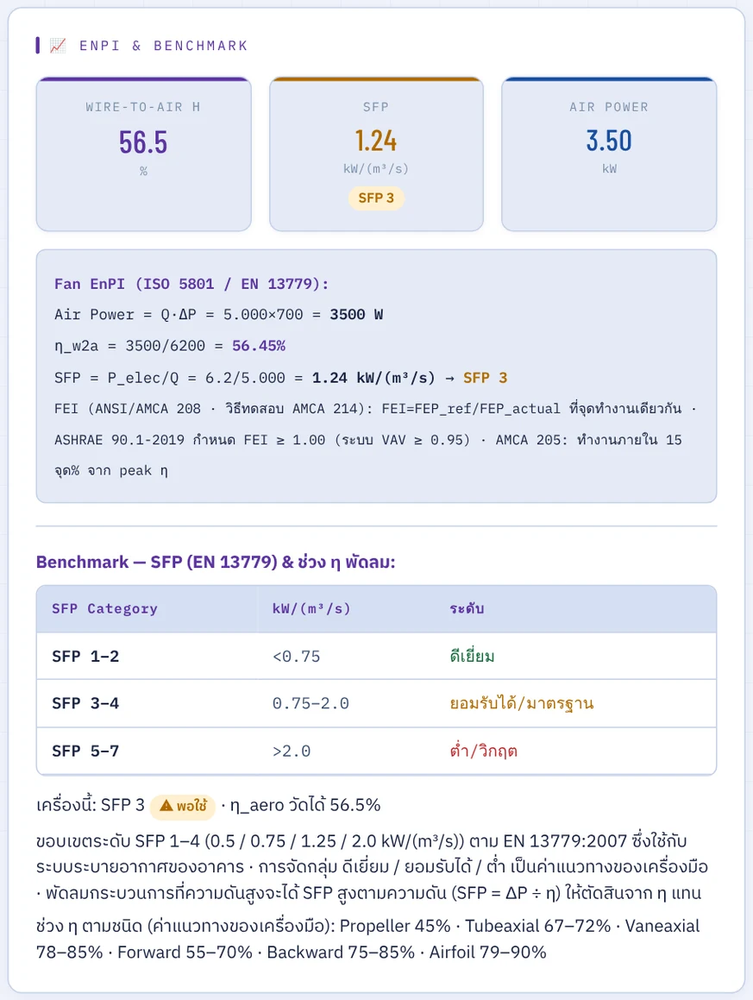
เปิด FIELD AUDIT → EnPI: ค่าพัดลมเติมให้เองหลังกด Calculate ในแท็บ FAN
Wire-to-Air 56.5 % · Air power 3.50 kW · SFP 1.24 kW/(m³/s) → SFP 3
SFP = P_elec ÷ Q (m³/s) — ยิ่งต่ำยิ่งดี · ระดับ SFP 1–4 ตาม EN 13779 ใช้กับระบบระบายอากาศอาคาร
พัดลมกระบวนการความดันสูงได้ SFP สูงตามความดันเสมอ ให้ตัดสินจาก η แทน
💡 เคล็ดลับ
การจัดกลุ่ม ดีเยี่ยม / ยอมรับได้ / ต่ำ ในตาราง SFP เป็นค่าแนวทางของเครื่องมือ
ข้อผิดพลาดที่พบบ่อย
คู่มือใช้งาน · ตรวจวัดพลังงานปั๊มและพัดลม (Pump & Fan Energy Audit) · ระดับ Free
29 / 32
✗ กรอก bar ลงช่อง kPa
✓ 3.6 bar = 360 kPa — กรอกผิดได้ Head ต่ำผิดปกติ ไม่มีคำเตือน
✗ kW เฟสเดียว
✓ ใช้ kW รวม 3 เฟส — ไม่งั้น η เกิน 100 %
✗ η เป็นเปอร์เซ็นต์
✓ η มอเตอร์กรอก 0.92 ไม่ใช่ 92
✗ ลืม ΔZ
✓ วัดระดับเกจส่ง − เกจดูด ทุกครั้ง
✗ วัดคนละเวลา
✓ Q · P₁ · P₂ · kW อ่านพร้อมกันขณะนิ่ง
✗ D₂ ค้างจากตัวอย่าง
✓ ประเมิน VFD อย่างเดียว ตั้ง D₂ = D₁
✗ เชื่อกฎกำลังสามเต็ม ๆ
✓ ระบบมี static head ผลจริงน้อยกว่า
✗ ไม่บันทึกงาน
✓ กด 💾 บันทึก JSON ก่อนปิดหน้า
แบบฝึกหัด: โรงงาน C
คู่มือใช้งาน · ตรวจวัดพลังงานปั๊มและพัดลม (Pump & Fan Energy Audit) · ระดับ Free
30 / 32
| ข้อมูล | ค่า |
|---|---|
| ปั๊มน้ำดิบ RWP-02 · มอเตอร์ · รอบพิกัด | 30 kW · 1,450 RPM |
| η มอเตอร์ · ส่งกำลัง · ของเหลว | 0.93 · ต่อตรง 1.0 · น้ำ |
| Q · P₁ · P₂ | 120 m³/h · −15 · 270 kPa-G |
| P_elec · รอบจริง · ΔZ | 16.5 kW · 1,460 RPM · 0.4 m |
| NPSH: Pv · h_fs · NPSH_r | 4.25 kPa · 1.5 m · 4.5 m |
| Affinity: N₂ · D₁ = D₂ | 1,200 RPM · 250 mm |
| Static head ของระบบ | 8 m |
คำถาม — กรอกแล้วตอบ
1
Head = ______ m · η ปั๊ม = ______ %
2
P_shaft = ______ kW · η_overall = ______ %
3
NPSH_a = ______ m · Margin = ______ m
4
ลดรอบเป็น 1,200: Q₂ = ______ m³/h · กำลังลด ______ %
💡 เคล็ดลับ
กด Calculate → Check NPSH → แท็บ Affinity แก้ N₂ และ D₂ → คำนวณ (N × D)
เฉลยแบบฝึกหัด โรงงาน C
คู่มือใช้งาน · ตรวจวัดพลังงานปั๊มและพัดลม (Pump & Fan Energy Audit) · ระดับ Free
31 / 32
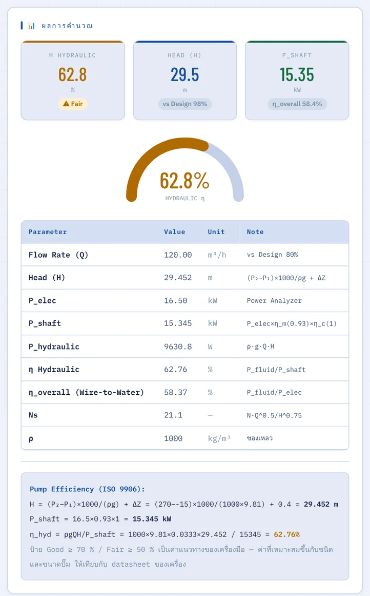
1) Head = 29.452 m · η ปั๊ม = 62.8 % (⚠ Fair)
2) P_shaft = 15.345 kW · η_overall = 58.4 %
3) NPSH_a = 6.87 m · Margin = 2.37 m (ปลอดภัย)
4) f = 0.8219 → Q₂ = 98.6 m³/h · กำลังลด 44.5 % (static 8 m = 27 % ของ H₁ — ผลจริงน้อยกว่านี้)
✓ ผ่าน
ได้ตัวเลขตรงกัน = ใช้เครื่องมือเป็นแล้ว · ภาพแสดงผล Performance ของโรงงาน C
สรุป 1 หน้า (พิมพ์ติดไว้ข้างคอมพิวเตอร์)
คู่มือใช้งาน · ตรวจวัดพลังงานปั๊มและพัดลม (Pump & Fan Energy Audit) · ระดับ Free
32 / 32
1
ป้าย/ออกแบบ
kW · Q·H ออกแบบ · RPM · η มอเตอร์ (0.xx) · η ส่งกำลัง
2
ค่าวัด
Q · P₁ · P₂ (kPa-G) · P_elec รวม 3 เฟส · ΔZ → Calculate
3
NPSH
Pv ตามอุณหภูมิ · NPSH_r ผู้ผลิต → Check NPSH
4
Curve & System
5–7 จุด Shutoff → Runout · Static + จุดอ้างอิง → Plot
5
Affinity
N₂ · D₂ (= D₁ ถ้า VFD อย่างเดียว) → คำนวณ (N × D)
6
Fault
η ออกแบบ · Q/Q_BEP · สั่น · แบริ่ง → วิเคราะห์
7
FIELD AUDIT
Walk-through · EnPI · MEI · ตรวจสภาพ → Report / CSV / JSON
อ่านผลแล้วตรวจ
☐
bar × 100 = kPa
☐
kW รวม 3 เฟส
☐
η เป็นสัดส่วน
☐
ΔZ ระหว่างเกจ
☐
D₂ = D₁ เมื่อดู VFD
☐
static head → ผลน้อยกว่ากำลังสาม
อ.หนึ่ง กลับทวี / Aj. Nueng Klubtavee
tripleeenergytools.com
tripleeenergytools.com